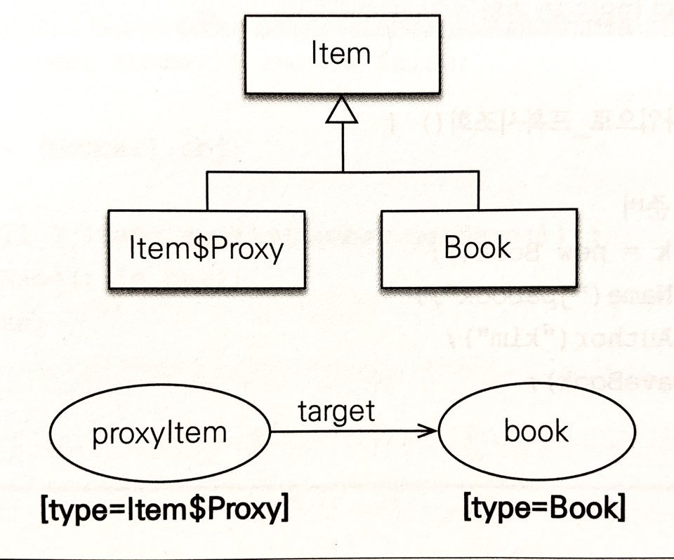

15.1 예외 처리
15.1.4 트랜잭션 롤백 시 주의 사항
- 트랜잭션 롤백은 DB 의 반영사항만 롤백하고 수정한 자바 객체는 복구해주지 않는다.
- 그렇기 때문에 객체가 수정된 상태로 영속성 컨텍스트에 남아있게된다.
- DB와 영속성 컨텍스트의 불일치를 해결하기위해 아래 방법을 사용한다.
EntityManager.clear()- 새 영속성 컨텍스트 생성
- OSIV 를 사용할 때 불일치가 있는 영속성 컨텍스트를 그대로 사용할 수 있기 때문에 위 방법으로 초기화 해주어야 한다.
트랜 잭션 롤백 시에 자동으로 영속성 컨텍스트도 초기화 하도록 변경되었다. - 기본 영속성 컨텍스트 전략에서는 롤백이 발생해 트랜잭션이 종료될 때 영속성 컨텍스트도 종료되므로 문제가 발생하지 않는다.
15.2 엔티티 비교
15.2 영속성 컨텍스트가 다를 때 엔티티 비교
- 엔티티는 영속성 컨텍스트에 존재 하지 않을 때 새로운 자바 인스턴스를 생성하고 이것을 재활용한다.
- 다른 두 영속성 컨텍스트에서 같은 엔티티를 조회할 때 문제가 발생할 수 있다.
- 동등성엔 만족하지만 반환 받게되는 인스턴스는 서로 다른 것이므로 동일성은 만족하지 못한다.
- 대안
- 데이터베이스 동등성 비교 (@Id 비교)
엔티티를 영속화하기 전에 엔티티 식별자를 얻을 수 없는 문제 존재 equals()오버라이딩
후보키에 해당하는 필드의 비교를 통해 동등성을 비교한다.
- 데이터베이스 동등성 비교 (@Id 비교)
| 같은 영속성 컨텍스트 | 다른 영속성 컨텍스트 | |
|---|---|---|
| 동일성(==) | o | x |
| 동등성(equals) | o | o |
| 데이터베이스 동등성 | o | o |
15.3 프록시 심화 주제
- 프록시는 엔티티를 상속받기 때문에 영속성 컨텍스트에서 반환받은 엔티티가 프록시인지 구분하지 않고 코드에서 사용할 수 있다.
- 그렇기 때문에 지연로딩 정책을 수정하더라도 코드상 수정 사항이 발생하지 않는다.
15.3.1 영속성 컨텍스트와 프록시
- 영속성 컨텍스트는 프록시와, 실제 엔티티를 반환할 수 있다.
gerReference(),find() - 같은 엔티티의 프록시와, 실제 엔티티를 동일성 비교를 수행하면 java 상에서는 서로 다른 인스턴스 이므로 false를 반환 해야한다.
- 그러나, 영속성 컨텍스트는 동일한 영속성 컨텍스트에서 엔티티의 동일성을 보장해야하기 때문에 처음 조회 했던 엔티티나, 프록시를 추후에 조회할 때 반환하게 된다.
find()를 먼저 수행하고getReference()
먼저 실제 엔티티가 영속화 됐기 때문에getReference()를 수행해도 프록시가 아닌 실제 엔티티를 영속성 컨텍스트로 부터 반환받는다.getReference()를 먼저 수행하고find()
프록시가 먼저 영속화 됐으므로find()시에도 프록시 반환
15.3.3 프록시 동등성 비교
- ide에서
equals()를 자동 생성하면 프록시 동등성 비교시 에러가 발생한다.- 기본적으로 타입을 동일성으로 비교하고,
- 프록시는 초기화 되기 전에 멤버 변수에 null 값이 들어있기 때문이다
Entity의 멤버변수 (name)을 보통
private으로 설정하기에 다른 곳에서 멤버 변수를 사용할 때는 항상 getter 를 사용하게되므로 null 이 반환되는 상황이 없지만, equals 는 해당 클래스에서 정의되기 때문에private멤버 변수임에도food.name접근이 가능해 null이 반환되는 문제가 생긴다.
@Entity
public class Food {
@Id
Long id;
@Column(unique=true) //비즈니스 키로 name인 예시이다.
String name;
@Override
public boolean equals(Object o) {
if (this == o) return true;
if (o == null || getClass() != o.getClass()) return false;
// Food 를 상속하므로 프록시는 instance of 로 비교해야함
Food food = (Food) o;
return Objects.equals(name, food.getName());
//프록시에서 최기에 food = null 이다 따라서 getName()을 호출해 초기화한 후 실행되어야 한다.
}- *intellij 에서 equals 생성 시 체크 옵션을 모두 체크하면 해결된다.
15.3.4 상속관계와 프록시
@Inheritance로 슈퍼타입 모델링 기법을 jpa 로 구현한 경우에 다형성을 위해 대개 다음과 같이 코드를 작성한다.
@Entity
public class Member{
@OneToOne(fetch=FetchType.LAZY)
private item; //book 을 가지고 있다 가정한다.
}
//memberA.setItem(new Book()); -> persist()

memberA.getItem()은 지연로딩이기 때문에 프록시를 반환하는데 반환하는 타입이 Item 의 프록시이다.- 이때, Book과 관련된 작업을 하고싶어도 Book 과 Item_Proxy 는 상속 관계가 아니므로 다운 캐스팅이 불가능하다.
- 다음은 상속관계 엔티티 사용시 발생하는 위와 같은 문제점을 해결하는 방법이다.
JPQL 로 대상 직접 조회
- JPQL 로 처음부터 자식 타입을 직접 조회 한다. Book 엔티티로 반환 값을 받는다.
- Item 이 아닌 Book 으로 결과 값을 조회 하므로 다형성을 사용할 수 없다.
프록시 벗기기
Item item=member.getItem();
// 지연 로딩이므로 프록시가 반환된다.
Item unProxy = unProxy(item);
// 프록시에서 원본 엔티티를 꺼낸다.
if(unProxy instanceof Book) // trueunProxy == item은false
프록시인 item과 실제 엔티티인 unProxy 를 비교하면 둘은 다른 인스턴스 이므로 false 가 반환된다.unProxy()를 사용하면, 결과적으로 조회한 프록시와 원본 엔티티를 구분하지 않고 사용할 수 없게 된다.
Jpa 는 영속성 컨텍스트 내에서 한번 프록시로 노출한 경우 계속 같은 프록시를 노출해 동일성을 보장하기 때문이다.
unProxy()사용 시에 영속성 컨텍스트에 보관하고 있는 것과 다른 인스턴스 이다!- 원본 엔티티 (
unProxy) 또한 영속화되어 관리된다. 따라서 원본 엔티티의 값을 변경해도 변경 감지는 동작한다.
기능을 위한 별도의 인터페이스 제공
- 각 자식 클래스들에서 인터페이스를 구현한다.
- 동적 바인딩 되므로 자식의 함수가 호출된다.
public interface Common{
void print();
}
public abstract class Item implements Common{}
public class Book extends Item{
@Override
public void print(){...}
}비지터 패턴 사용
[참고] : visitor pattern
//슈퍼타입 @Inheritance()...
public abstract class Item {
// 비지터 패턴 사용
public abstract void accept(Visitor visitor);
}
@Entity
@DiscriminatorValue("B")
public class Book extends Item{ // Album .. 다른 엔티티 동일
@Override
public void accept(Visitor visitor
visitor.visit(this);
}
}item.accept(new VisitorImpl())호출 시- 프록시는 원본 엔티티의 메서드 호출을 위임받아 실행하므로
book.accept(visitor)가 호출된다. - 결과적으로
VisitorImpl에 구현된 로직대로 엔티티들이 처리된다. - instance of 나 타입 캐스팅 없이 구현이 가능하며, 알고리즘과 객체 구조를 분리해 OCP 를 지킬 수 있다.
15.4 성능 최적화
15.4.1 N+1 문제
즉시 로딩 시
em.find()면 조인 쿼리를 수행해 문제가 발생 x- 그러나, jpql
select m from Member m을 하면 jpql을 수행해 Member 결과 값만 가져오고 조인 쿼리를 수행하지 않는다. - 즉시 로딩으로 설정되었으므로 각 결과 칼럼마다 연관 엔티티를 조회하는 쿼리가 n 번 수행된다.
- 그래서 n+1 쿼리라 한다.
- n 은 member 결과 칼럼의 수
- 1 은 member 를 조회하기 위한 쿼리 한번.
지연 로딩과 N+1
- 지연 로딩이므로 기본적으론 n+1 문제가 발생하지 않는데, 아래와 같이 list 를 순회하는 경우 n+1 문제가 발생한다.
List<Member> members = em.find(Member.class,1L);
for(Member member : members){
member.getOrders().size();
// select * from orders where member_id = 1..n*수행
}페치 조인 사용
select m from Member m join fetch m.orders같은 쿼리로 N+1 문제 해결 가능
하이버네이트의 @BatchSize
- 지정한 size 만큼 SQL 의 In절을 사용해 조회 한다.
select * from orders where member_id in (?,?,?..n)
class Member{
@BatchSize(size=5)
@OnetoMany(mappedBy="member",fetch=FetchType.EAGER)
private List<Order> orders = new ArrayList<Order>();
}-
즉시 로딩시
@BatchSize를 설정하면 orders를 조회하는 쿼리에 size 값 만큼in절에 member_id 넣어 원래 n 번 반복되는 상황을 (n/size) 번 만큼 쿼리가 수행되게 한다. -
지연 로딩으로 설정한 경우엔 orders를 최초 사용 시 size 만큼 orders 를 조회하는 쿼리를 수행하고 재사용한다. 미리 로딩한 데이터가 없을 때 size 만큼 orders 를 다시 로딩해두는 과정을 반복한다.
하이버네이트 @Fetch(FetchMode.SUBSELECT)
- 연관된 데이터 조회 시에 서브쿼리를 사용해 N+1 문제를 해결한다.
select O from Orders o where o.member_id in (select m.id from member M where m.id>10)
- 즉시 로딩이면 조회 시점에 지연 로딩이면 엔티티 사용 시점에 실행된다.
N+1 정리
- 지연 로딩을 기본으로 사용하고 필요시에
fetch join을 사용하는 것을 권장 @OneToOne, @ManyToOne은 기본 전략이 즉시 로딩이므로 지연 로딩을 명시해야 한다.
15.4.2 읽기 전용 쿼리의 성능 최적화
- 영속성 컨텍스트는 변경 감지를 지원하기 위해 스냅샷 인스턴스를 보관해 메모리를 더 많이 사용한다는 단점이 존재한다.
- 읽기 전용 쿼리는 딱 한번만 읽어서 화면에 출력하면 된다.
- 스칼라 타입으로 조회
select o.id,o.name... from Order o- 영속성 컨텍스트가 스칼라 타입은 관리하지 않는다.
- 읽기 전용 쿼리 힌트
@QueryHint(name = "org.hibernate.readOnly", value = "true")- 스냅샷을 보관하지 않아 메모리 사용량 최적화 가능
- 스냅샷이 없으므로 엔티티를 수정해도 반영 x
- 읽기 전용 트랜잭션
- 하이버네이트 세션의 플러시 모드를 FlushMode.MANUAL로 설정한다.
- 강제로 호출하지 않는 한 트랜잭션이 커밋 되어도 플러시가 실행되지 않는다.
- 플러시할 때 스냅샷을 비교하는 작업이 일어나지 않아 성능이 향상된다.
- 트랜잭션 밖에서 읽기
@Transactional(propagation= Propagation.NOT_SUPPORTED)- 트랜잭션을 사용하지 않아 플러시가 일어나지 않는다. 따라서 조회 성능이 향상된다.
- JPQL 또한 트랜잭션이 없으면 플러시를 호출하지 않는다.
- 스칼라 타입으로 조회
| 영속화 | 스냅샷 생성 | flush | |
|---|---|---|---|
| 스칼라 타입 | x | x | x |
| 쿼리 힌트 | o | x | o (동작 x) |
| readonly 트랜잭션 | o | o | x |
- 쿼리 힌트는 스냅샷 생성을 안하므로 메모리 최적화에 이점이 있고 read only 트랜잭션은
flush가 동작하지 않으므로 속도 최적화에 이점이 있다. - 결론적으로 가장 좋은 최적화는 두 옵션을 동시에 사용하는 것이다.
@Transactional(readOnly = true)
// 읽기 전용 트랜잭션 - 플러시가 작동하지 않아 성능 절약
public List<Member> getMemberList(long memberId) {
return em.createQuery("select m from Member m", Member.class)
.setHint("org.hibernate.readOnly", true) // 읽기 전용 쿼리 힌트 - 메모리 절약 .getResultList(); }Spring Data Jpa 에서
@QueryHinsts힌트를 주지 않아도@Transactional (readOnly=true)만 작성해도 위와 같이 동작한다.
15.4.5 트랜잭션을 지원하는 쓰기 지연과 성능 최적화
트랜잭션을 지원하는 쓰기지연과 JDBC 배치
- 1차 캐시와
flush기능을 활용하여 SQL배치 처리를 효과적으로 가능하다. - application.properties 에
hibernate.jdbc.batch_size크기만큼 같은 쿼리를 모아서 수행 - Mysql 은 IDENTITY 이므로 식별자를 위해
em.perist()이즉시 쿼리를 수행해야하므로 쓰기지연을 사용한 배치 최적화 불가능
트랜잭션을 지원하는 쓰기 지연과 애플리케이션 확장성
- 데이터 베이스의 쓰기 지연과 변경 감지 기능은 테이블 행에 락이 걸리는 시간을 최소화 시킨다.
flush시점에 쿼리를 수행하고 커밋하기 때문이다.